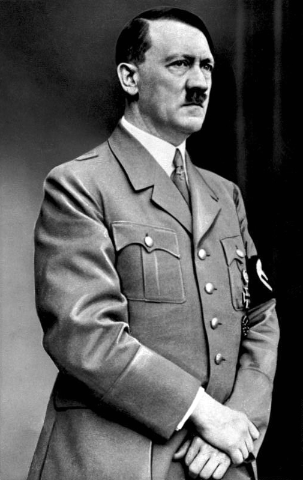
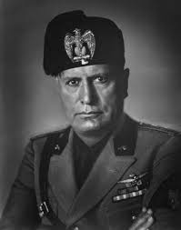
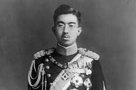
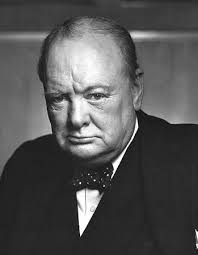
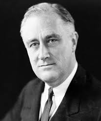
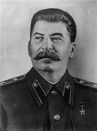
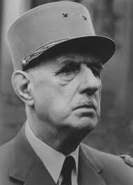

A Segunda Guerra Mundial foi marcada pela presença de líderes cujas decisões e ações tiveram um impacto
profundo no curso do conflito. Estes líderes, tanto das Potências do Eixo quanto dos Aliados,
influenciaram
diretamente os eventos que moldaram a história mundial durante e após a guerra.
1. Adolf Hitler (Alemanha)
Adolf Hitler foi o líder da Alemanha nazista e uma das figuras mais infames da história. Como Führer e
chanceler da Alemanha, ele foi o principal responsável pelo desencadeamento da Segunda Guerra Mundial e
pelas políticas genocidas que levaram ao Holocausto, no qual seis milhões de judeus foram assassinados.
A
ideologia de Hitler, centrada no nacionalismo extremo, racismo e antissemitismo, impulsionou a agressão
militar da Alemanha e a criação de um regime totalitário que procurou dominar a Europa.

2. Benito Mussolini (Itália)
Benito Mussolini foi o ditador fascista da Itália e um dos principais aliados de Hitler. Ele liderou a
Itália em várias campanhas militares durante a guerra, incluindo a invasão da Etiópia e a participação
na
guerra ao lado das Potências do Eixo. Mussolini buscou expandir o território italiano e restaurar o
poder
imperial de Roma, mas suas ambições militares frequentemente resultaram em fracassos, contribuindo para
o
colapso de seu regime em 1943.

3. Hirohito (Japão)
O Imperador Hirohito foi o líder simbólico do Japão durante a Segunda Guerra Mundial. Embora seu papel
real
no governo japonês seja objeto de debate, ele foi a figura central em torno da qual o governo
militarista do
Japão se organizou. Sob seu reinado, o Japão embarcou em uma campanha expansionista agressiva na Ásia,
que
culminou no ataque a Pearl Harbor e na subsequente guerra com os Estados Unidos e outras nações aliadas.

4. Winston Churchill (Reino Unido)
Winston Churchill foi o primeiro-ministro do Reino Unido durante a maior parte da Segunda Guerra Mundial
e é
amplamente creditado por inspirar e liderar a resistência britânica contra a Alemanha nazista. Com seus
discursos motivadores e uma política de recusa intransigente à rendição, Churchill desempenhou um papel
crucial em manter o moral britânico e em forjar alianças com os Estados Unidos e a União Soviética. Ele
também esteve presente nas principais conferências dos Aliados, ajudando a planejar a estratégia de
guerra e
a forma do pós-guerra.

5. Franklin D. Roosevelt (Estados Unidos)
Franklin D. Roosevelt foi o presidente dos Estados Unidos durante a maior parte da Segunda Guerra
Mundial.
Ele liderou o país em um período de grande transformação, desde a Grande Depressão até a mobilização
total
para a guerra. Roosevelt foi instrumental em apoiar os Aliados antes mesmo da entrada oficial dos EUA na
guerra, através de políticas como a Lei de Empréstimo e Arrendamento, e em coordenar os esforços
militares e
econômicos que eventualmente levariam à vitória dos Aliados.

6. Joseph Stalin (União Soviética)
Joseph Stalin foi o líder da União Soviética durante a Segunda Guerra Mundial e desempenhou um papel
crucial
na derrota da Alemanha nazista. Sob sua liderança, a União Soviética resistiu à invasão alemã e, após a
decisiva vitória na Batalha de Stalingrado, iniciou uma série de contra-ofensivas que eventualmente
levaram
à captura de Berlim. Stalin participou das conferências de guerra dos Aliados, onde negociou os termos
da
reorganização pós-guerra da Europa e garantiu a expansão da influência soviética na Europa Oriental.

7. Charles de Gaulle (França)
Charles de Gaulle foi o líder da França Livre, o governo no exílio que se opôs à ocupação alemã da
França.
De Gaulle recusou-se a aceitar a rendição da França e trabalhou para unificar as forças de resistência
francesas e ganhar o apoio dos Aliados. Após a libertação da França em 1944, de Gaulle tornou-se o chefe
do
governo provisório e desempenhou um papel fundamental na reconstrução do país após a guerra.

Conclusão
Os líderes envolvidos na Segunda Guerra Mundial eram figuras de grande influência e poder, cujas
decisões
moldaram o destino de milhões de pessoas e o curso da história global. Suas legados são complexos e, em
muitos casos, controversos, refletindo as profundas divisões ideológicas e as brutais realidades do
conflito
que ajudaram a dirigir.